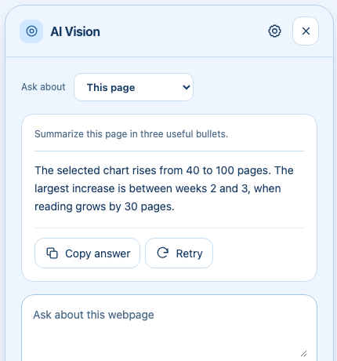

How to summarize a webpage with Gemini
By AI Vision project · Updated
To summarize a webpage in Chrome, choose This page in AI Vision and ask for the format you need. Gemini can pull out the main point, supporting details, and caveats without leaving the article.

Start with one readable page
- Save your Gemini API key in AI Vision’s Settings.
- Open the article in Chrome and let its relevant content load.
- Open AI Vision and choose This page (The Tab in version 2.5) from the context controls.
- Choose Summarize, or ask for the format you need.
- Verify dates, figures, and quotations against the original page.
This page reads supported content from the current page. It is useful when selecting one screenshot would leave out important paragraphs. The extension may also send a screenshot of the visible page to provide visual context.
Worked example: a library announcement
Here is fictional source material:
The library is testing a quiet study hour from 4–5 pm on Tuesdays and Thursdays for six weeks. The ground floor stays open for conversation. Staff will collect visitor feedback before deciding whether to continue.
Ask: “Summarize what changes, what stays the same, and what is still undecided.”
Illustrative answer: Quiet study hours are being trialed twice a week for six weeks. The ground floor remains a social space. A permanent schedule has not been decided; visitor feedback will inform it.
The last sentence matters. Calling the trial a permanent change would distort the source. A follow-up such as “What date does the trial end?” should identify missing information if no start date appears on the page.
Prompts for different reading tasks
- Quick overview: “Give me the central claim, three supporting points, and the most important caveat.”
- Meeting preparation: “Summarize this page in five bullets for someone who has not read it. Separate facts from the author’s opinions.”
- Action list: “Extract the explicit next steps and deadlines. Mark anything that is a suggestion rather than a requirement.”
You can choose a concise or detailed response style in Settings. Start with a narrow request and ask a follow-up when you need more detail. The open panel keeps up to three recent question-and-answer turns; switching modes or closing it discards that conversation context.
What to do with an incomplete summary
If the answer misses a section, confirm that the content has loaded and is readable on the page. Very long content may be shortened to stay within the extension’s context limits. Ask about one section at a time. For a chart, canvas, or image containing text, use a selected screenshot instead.
Chrome internal pages and the Chrome Web Store are restricted. A PDF viewer, embedded content, or a highly dynamic page may not expose readable article text. AI Vision does not bypass access restrictions or paywalls.
Keep the source close
A fluent answer is not a guarantee of accuracy. Check names, numbers, dates, and any quote you plan to reuse. For a decision that spans several sources, compare the related Chrome tabs and ask the answer to identify its source for each claim.
If a request fails before you get an answer, check the key, model, and quota troubleshooting guide. Your question and the necessary page context go directly to Google’s Gemini API as described in the privacy notice.